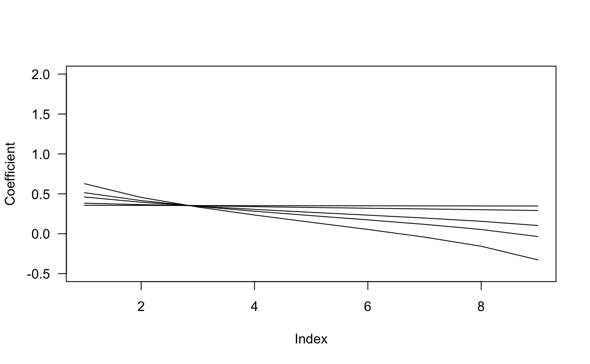
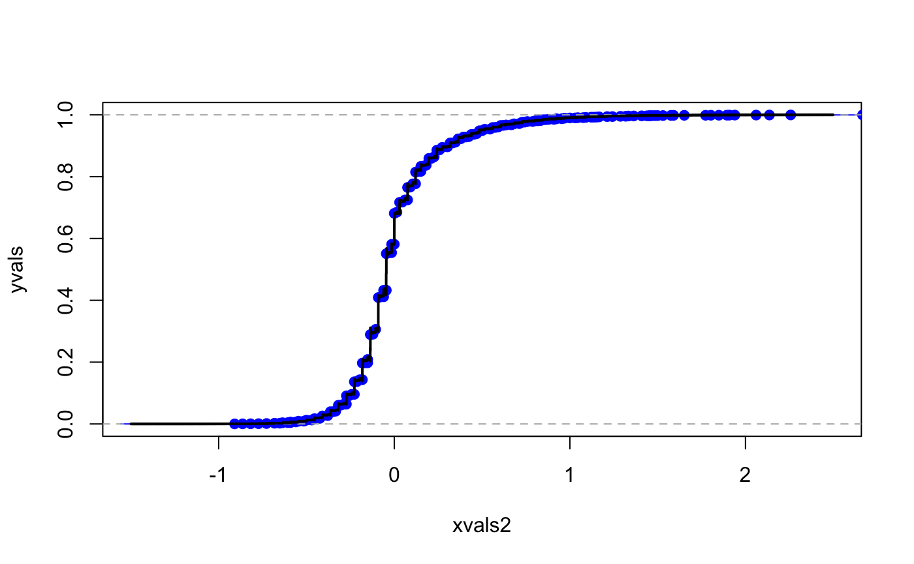
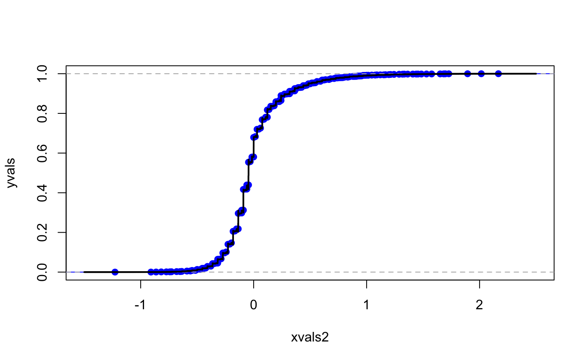
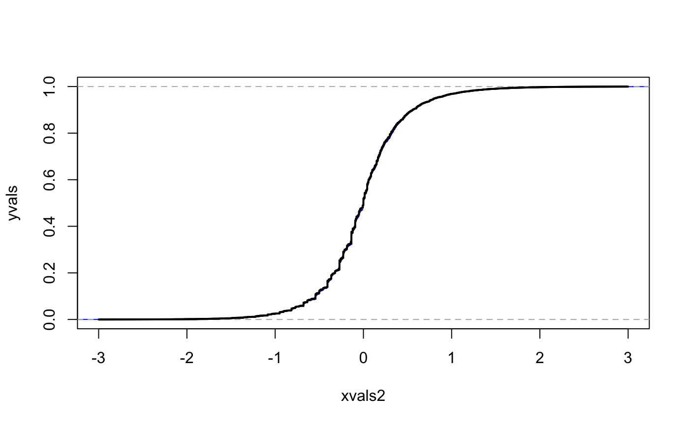

Here we recreate the figures from the paper and give more example of how to use the phase-type representation of the block counting process.
library(phasty)
First, a sanity check, we recover the numerical values of the covariance matrix for the site frequency spectrum, which is also computed on p. 5 of Durrett.
n = 8 ph_rew_obj = block_counting_process(n) #> Warning in phase_type(subintensity_matrix): The initial probability vector is #> automatically generated. #> Warning in phase_type(subintensity_matrix, reward_mat = rew_mat): The initial #> probability vector is automatically generated. round(0.25*var(ph_rew_obj),4) #> [,1] [,2] [,3] [,4] [,5] [,6] [,7] #> [1,] 0.3211 -0.0358 -0.0210 -0.0141 -0.0103 -0.0079 0.1384 #> [2,] -0.0358 0.2495 -0.0210 -0.0141 -0.0103 0.1328 -0.0356 #> [3,] -0.0210 -0.0210 0.2076 -0.0141 0.1283 -0.0346 -0.0267 #> [4,] -0.0141 -0.0141 -0.0141 0.3173 -0.0359 -0.0275 -0.0216 #> [5,] -0.0103 -0.0103 0.1283 -0.0359 0.1394 -0.0230 -0.0183 #> [6,] -0.0079 0.1328 -0.0346 -0.0275 -0.0230 0.1310 -0.0159 #> [7,] 0.1384 -0.0356 -0.0267 -0.0216 -0.0183 -0.0159 0.1224
Next, we recreate some of the figures in the paper
n = 10 ph_rew_obj = block_counting_process(n) #> Warning in phase_type(subintensity_matrix): The initial probability vector is #> automatically generated. #> Warning in phase_type(subintensity_matrix, reward_mat = rew_mat): The initial #> probability vector is automatically generated. lambdavals = c(0.02,0.2,1,2,10) coef_matrix = matrix(0,length(lambdavals),n-1) nu = 1/(1:(n-1) ) for(i in 1:length(lambdavals)) { lambda = lambdavals[i] bLambda=lambda^2*var(ph_rew_obj) + lambda*diag( mean(ph_rew_obj) ) coef_matrix[i,]=solve(bLambda)%*%nu/c(nu%*%solve(bLambda)%*%nu) } plot(coef_matrix[1,],type="l",las=1,ylab="Coefficient",ylim=c(-0.5,2)) for(i in 2:length(lambdavals)) { lines(coef_matrix[i,]) }

Figures for numerical inversion of chf
n = 4 # create rate-matrix and state space for block counting process RMASS = RateMAndStateSpace(n) m = dim(RMASS$RateM)[1] #(m should be equal to partitions::P(n)) # Obtain subintensity matrix subintensity_matrix = RMASS$RateM[1:(m-1),1:(m-1)] # The reward matrix is the state space matrix of the block counting process, except the row & column related to the # aborping state. rew_mat = RMASS$StSpM[1:(m-1),1:(n-1)] bT=RMASS$RateM[1:(dim(RMASS$RateM)[1]-1),1:(dim(RMASS$RateM)[1]-1)] SPMAT=RMASS$StSpM[1:(dim(RMASS$StSpM)[1]-1),1:(dim(RMASS$StSpM)[2]-1)] bone = matrix(1,dim(bT)[1],1) #(1,1,...,1)* alpha = matrix(0,1,dim(bT)[1]);alpha[1]=1 #(1,0,...,0) bR = SPMAT #the rewards matrix *is* the statespace matrix bS = bT - diag(rowSums(bR)) ph_obj=phase_type(subintensity_matrix) #> Warning in phase_type(subintensity_matrix): The initial probability vector is #> automatically generated. ph_rew_obj=phase_type(subintensity_matrix, reward_mat = rew_mat) #> Warning in phase_type(subintensity_matrix, reward_mat = rew_mat): The initial #> probability vector is automatically generated.
R = 1e4 ph_mv_sim_obj = sim_rew_phase_type(R,ph_rew_obj) rew_dim = dim(ph_mv_sim_obj)[1] lambda = 1 ph_counts = matrix(0,rew_dim,dim(ph_mv_sim_obj)[2]) for(i in 1:rew_dim) { ph_counts[i,] = rpois(R,lambda*ph_mv_sim_obj[i,]) }
res = 1000 ba = res*(2*((1:(n-1))*( (n-1):1))/(n*(n-1)) - 1/sum(1/(1:(n-1))))
themean = mean(mean(ph_rew_obj)*ba) #the mean of the linear combination bT = subintensity_matrix #bold T bR = rew_mat #bold R bS = bT - diag(rowSums(bR)) #bold S bone = matrix(1,dim(bT)[1],1) #bold one = (1,1,...,1)^T balpha = matrix(0,1,dim(bT)[1]);balpha[1]=1 #(1,0,...,0) phi <- function(t) (exp(-1i*themean*t))*balpha%*%solve(bS+diag(c(bR%*%(exp(1i*t)^ba))) )%*%bT%*%bone
appvals=ApproxCDF(phi,H = 1e5,eta=0.001,xlim=c(-1.5*res,2.5*res)) xvals=appvals[[1]] yvals=appvals[[2]] ba2 = (1/res)*ba xvals2 = (1/res)*xvals themean2 = (1/res)*themean centered_sim2 = t(ph_counts)%*%ba2-c(themean2) ecdfobj2 = ecdf(centered_sim2) plot(xvals2,yvals,type="l",ylim=c(0,1)) lines(ecdfobj2,col="blue") lines(xvals2,yvals,lwd=2)

plot(xvals2,yvals,type="l",ylim=c(0,1),xlim=c(-0.5,0.5)) lines(ecdfobj2,col="blue") lines(xvals2,yvals,lwd=2)
 Next, we run the above code with
n = 8
#> Warning in phase_type(subintensity_matrix): The initial probability vector is
#> automatically generated.
#> Warning in phase_type(subintensity_matrix, reward_mat = rew_mat): The initial
#> probability vector is automatically generated.